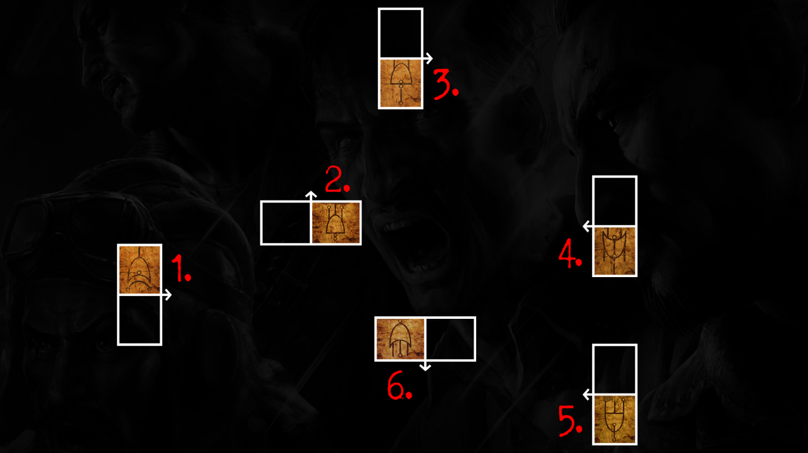

Prerequisites
- Shield
- Power On
- PaP
- Hell's Retriever (for step 6)
- Silver Spoon (for step 1)
- Monkey Bombs (for step 3 and recommended after step 6 and for boss fight)
Recommended Setup
- Elixirs
- Undead Man Walking
- Temporal Gift
- During the Game
Main EE - Video
Rewards:
- Knife the wall at the top of the stairs in the Warden's House with the silver spoon to scratch it.
- Go into the Citadel Tunnels and input the number 666 by shocking the number swith a shield blast and interacting with them (this will force a Warden Spawn)
- Lead the Warden to the scratched wall using a monkey bomb (when he slams on the monkey, the wall should break)
- Upon entering the room, pick up the red orb on the corner of the table to your immediate left and interact with the switch next to the electric chair
- Return to spawn and interact with the map on the wall to place the orb. Now interact with the kronorium on the floor behind you
- Bird Locations Find the bird somewhere around the map by listening for the squack when activating afterlife vision. When you find the bird, shoot it with a shield blast. Must repeat 4 times on 4 seperate rounds (1 bird per round) To get the final bird, (you won't be able to see it) you'll need to look for a blue glint and hear the warden crying which indicates you're looking directly at it Input the number 872 into the number pad and pick up the zombie blood power up. Looking through your shield at the spot you found ebfore should now show the bird, throw you're hell's retriever at it to grab it. Pick up the kronorium that is infront of the location.
- Head back to the Warden's Ritual Chamber and give the skeleton in the chair the kronorium by interacting with him.
- Challenges
- Enter Afterlife vision and look at the open book to see 3 numbers. input these into the number pad in the Citadel Tunnels.
- Look at where the lighthouse shines its beam and head there. looking though afterlife vision at the location will reveal a red portal. shield blast it to open it and begin the challenge.
- Return to the kronorium after completing the challenge and get a new code. repeat 5 times.
- Look around the map (in the water) for 3 bouys which will each give you a number (view code through afterlife). add all 3 numbers together and type that number as morse code into Salys Port morse code thing. (3 seconds for dash, <1 second for dot)
- off the left edge of the platform at the top gondola
- Just outside of the end of the Catwalk
- From a window in the spawn building
- Head to the infirmary and kill a zombie close to the exit to Cell Blocks then look for a ghost using afterlife, shield blast him and interact to start the escort Fill the ghost with zombie sould to keep him mocing as you escort him down to the red portal at Docks. (use the gondola)
- Pick up the red orb on the ground
- Get a kill in the cafeteria to spawn a ghost. Use afterlife and shield blast him to start the escort. protect him from zombie attacks as he heads to the portal (you are able to damage the ghost)
- grab the orb infront of the portal
- A ghost will appear next to the portal holding a banjo, grab it to start the step.
- Find the blue ring and get kills while standing inside it (will take damage when outside the ring or if you have the banjo for too long)
- The ring will sometimes move locations, jsut move with it. WHen complete, you will hear a banjo noise. yo ucan then return the banjo and collect the red ball.
- Head down to Building 64 and interact with the sparking generator to begin simon says.
- You will see lights flash on and off infront of panels. You must wait for the pattern to finish before repeating it. (from 1 panel to 5)
- When finished, 3 panels lights will remain lit. write down what their symbols are. Grab the punchcard on the shelf between 2 doorways.
- Go to the second floor of spawn and place the punchcard into hte machine in the corner. several screens will start displaying the symbols, interact with the 3 from the generators and write down the new symbol they turned into.
- Go back to the Power House and figure out which levers your symbols are attached to. Spirit blast the ghost when he is on his way to each of your symbols.
- grab the red orb infront of the last lever.
- Head to D-Block and get a zombie kill. Enter afterlife to see the ghost. shoot him with a shield blast to activate him
- Drain him with your shield key (no more lightning effect after 7 seconds) then repeat the process of shield blasting and draining 5 times total.
- When the ghost has chenged posture and speed, head into the New Industries building and interact with the trap once the ghost gets close. If done correctly he will drop the red orb you need.
- Once all challenges has been complete, head back to spawn and interact with the map once more to place the rest of the red orbs. (Now get ready for the boss fight (including a shield blast))
- Once ready, head back into the Warden's Ritual Chamber and interact with the kronorium. (Cutscene)
- Leave teh cell and grab a shield (if you dont have one already) and grab the sack on the floor at the doorway to get your weapons back. Follow the bird and kill the Wardens and Dogs around the Prison.
- When you reach the point where the Warden gets abducted, he will drop the final red orb which you must pick up and place on the map.
- Go up the now open staircase and interact with the broekn lights to enter the boss fight.
| Challenge Location | Challenge Steps |
|---|---|
| Docks (Morse Code) |
|
| Michigan Avenue (lighthouse beam will not be pointing anywwhere) |
|
| Showers (Banjo) |
|
| Power House (Simon Says) |
 |
| New Industries (ensure you have a full shield blast before starting) |
|
Boss Fight
- Waves of zombies, dogs, and wardens will spawn
- Max ammo and carpenter will spawn once everything has been killed
- Once this is done, head to wher ethe warden is and shoot the 3 glowing orbs around him until they dissapear Then shield blast the glowing white thing above the center 2 times.
- After repeating this several times, richtofen will eventually need to ender the Dark MEchaninsm in the center of the arena
- After RIchtofen has returned and kileld everything, the Warden will finally attack the players. You must kill him.